library(tidyverse) # carrega el tidyverse (inclou ggplot2)
competencies <- read_csv2("dades/competencies.csv") |> # importa les dades netes...
mutate(habitat = factor(habitat, # ...i torna a ordenar les categories
levels = c("Fins a 10000", "De 10001 a 100000", "Més de 100000")),
nivell_mat = factor(nivell_mat, levels = c("Baix", "Mitjà", "Alt")))Tutorial: gràfics de dispersió amb ggplot2
Sessió 4 · Per a qui ja ha acabat la pràctica
NotaPer a qui és aquest tutorial?
Per a qui ja ha acabat la pràctica de la sessió 4 i vol fer gràfics de dispersió més complets que la plantilla de les slides: amb colors per grup, un gràfic per grup, títols i textos.
Com s’ha de fer: obriu un script nou a RStudio (File → New File → R Script), copieu-hi el codi de cada pas (amb el botó 📋 de la dreta de cada bloc), executeu-lo amb Ctrl + Enter i mireu què surt al panell Plots. Al final de cada apartat hi ha un «Prova-ho» per practicar, amb la solució amagada.
No heu fet mai cap gràfic amb ggplot2? Comenceu pel tutorial de primers gràfics de la sessió 2.
0. Preparació
Amb el projecte de la sessió 4 (sessio_4.Rproj) obert, carregueu el tidyverse i importeu les dades, igual que al pas 1 de la pràctica:
Recordeu: entre les capes d’un gràfic va +, no |>.
1. Del gràfic bàsic a un gràfic per presentar
La plantilla de les slides:
ggplot(competencies, aes(x = nota_cat, y = nota_ang)) + # dades i variables de cada eix
geom_point() # un punt per alumne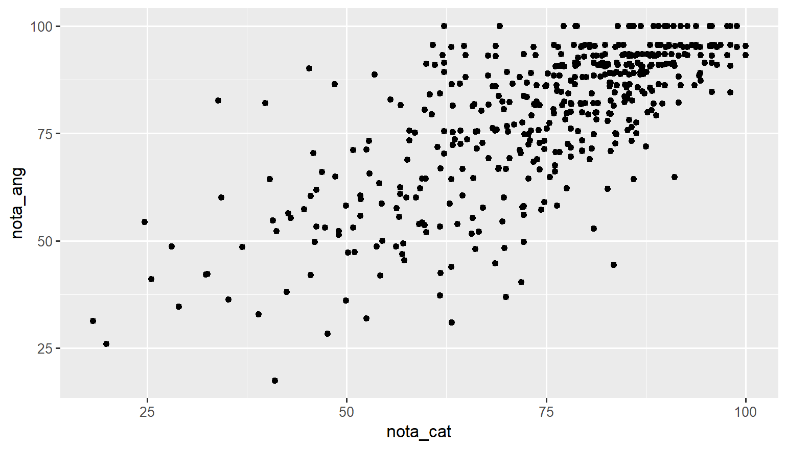
Funciona, però és millorable. Hi afegim títols amb labs() i un estil net amb theme_minimal():
ggplot(competencies, aes(x = nota_cat, y = nota_ang)) +
geom_point() +
labs(x = "Nota de català (0-100)", # títol de l'eix X
y = "Nota d'anglès (0-100)", # títol de l'eix Y
title = "Notes de català i d'anglès", # títol del gràfic
subtitle = "480 alumnes de 6è", # subtítol
caption = "Font: Departament d'Educació") + # nota a sota
theme_minimal() # estil net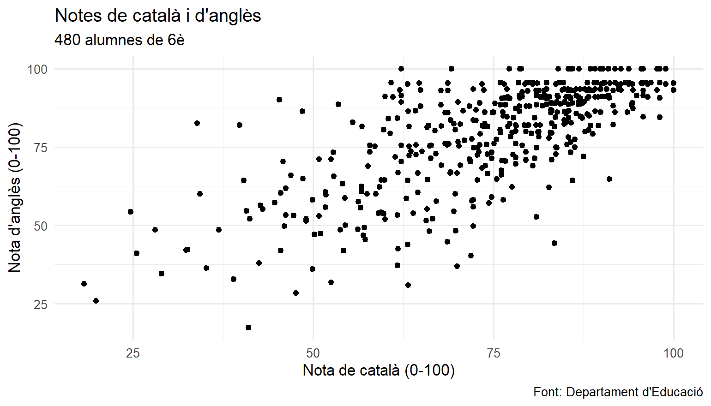
2. Massa punts? Transparència
Quan hi ha molts punts, se sobreposen i no es veu on n’hi ha més. Amb alpha (de 0, invisible, a 1, opac) els fem transparents: on n’hi ha molts, el color és més fosc.
ggplot(competencies, aes(x = nota_cat, y = nota_ang)) +
geom_point(alpha = 0.4, # transparència
size = 2, # mida dels punts
color = "#6D071A") + # color fix (fora d'aes)
labs(x = "Nota de català", y = "Nota d'anglès") +
theme_minimal()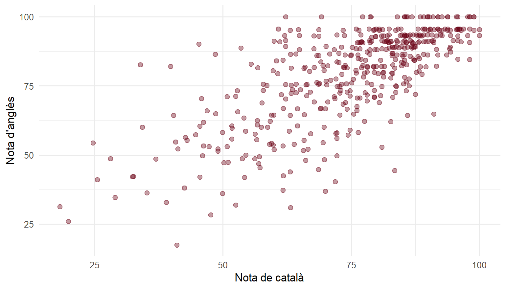
3. La recta de regressió
geom_smooth(method = "lm") hi afegeix la recta de regressió (la mateixa que dona lm()). La franja grisa és l’interval de confiança del 95 % de la recta; amb se = FALSE la traiem.
ggplot(competencies, aes(x = nota_cat, y = nota_ang)) +
geom_point(alpha = 0.4, color = "grey50") +
geom_smooth(method = "lm", # la recta de regressió
se = FALSE, # sense la franja de l'interval
color = "#6D071A", # color de la recta
linewidth = 1.2) + # gruix de la recta
labs(x = "Nota de català", y = "Nota d'anglès") +
theme_minimal()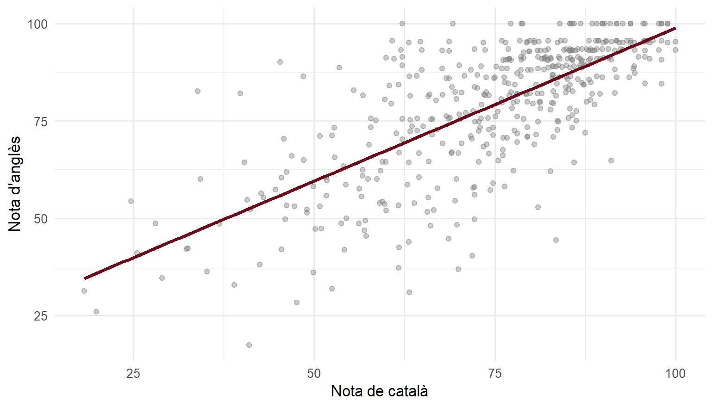
Consell
Si traieu method = "lm", geom_smooth() dibuixa una corba que s’adapta a les dades. És útil per veure si la relació és realment una línia recta (el supòsit L de la regressió).
Nota✍️ Prova-ho: matemàtiques i anglès (cliqueu per veure la solució)
Feu el gràfic de dispersió de la nota de matemàtiques (X) i la d’anglès (Y), amb transparència, la recta i els eixos ben etiquetats. La relació és més forta o més feble que la de català i anglès?
ggplot(competencies, aes(x = nota_mat, y = nota_ang)) +
geom_point(alpha = 0.4, color = "steelblue") +
geom_smooth(method = "lm", se = FALSE, color = "black") +
labs(x = "Nota de matemàtiques", y = "Nota d'anglès") +
theme_minimal()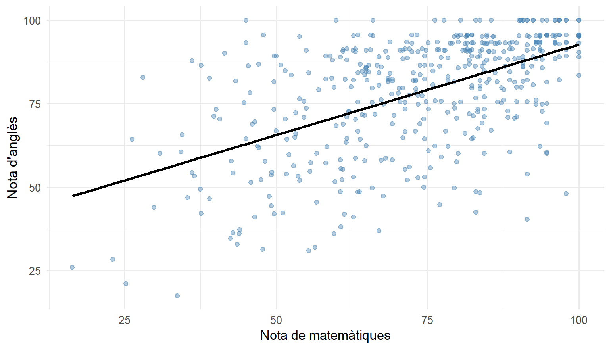
Els punts estan més escampats al voltant de la recta: la relació és més feble (r = 0,55, davant de 0,73).
4. Colors per grup
Si posem una variable categòrica a color dins d’aes(), cada grup té el seu color… i geom_smooth() fa una recta per a cada grup:
ggplot(competencies, aes(x = nota_cat, y = nota_ang,
color = genere)) + # color segons el gènere
geom_point(alpha = 0.4) +
geom_smooth(method = "lm", se = FALSE) + # una recta per a cada gènere
scale_color_manual(values = c("Dona" = "#6D071A", # colors triats a mà
"Home" = "grey40")) +
labs(x = "Nota de català", y = "Nota d'anglès", color = NULL) +
theme_minimal()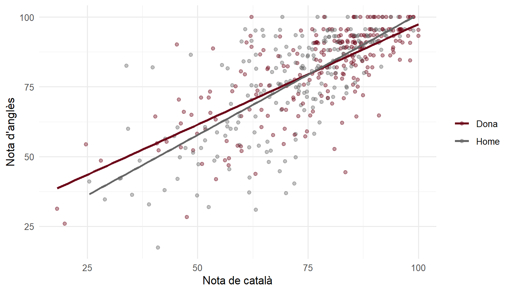
Les dues rectes són gairebé paral·leles i a prop l’una de l’altra: la relació entre català i anglès és molt semblant per a nois i noies (com vau veure al pas 5 de la pràctica).
Nota✍️ Prova-ho: una recta per titularitat (cliqueu per veure la solució)
Feu el mateix gràfic amb un color i una recta per a cada titularitat.
ggplot(competencies, aes(x = nota_cat, y = nota_ang, color = titularitat)) +
geom_point(alpha = 0.4) +
geom_smooth(method = "lm", se = FALSE) +
labs(x = "Nota de català", y = "Nota d'anglès", color = "Titularitat") +
theme_minimal()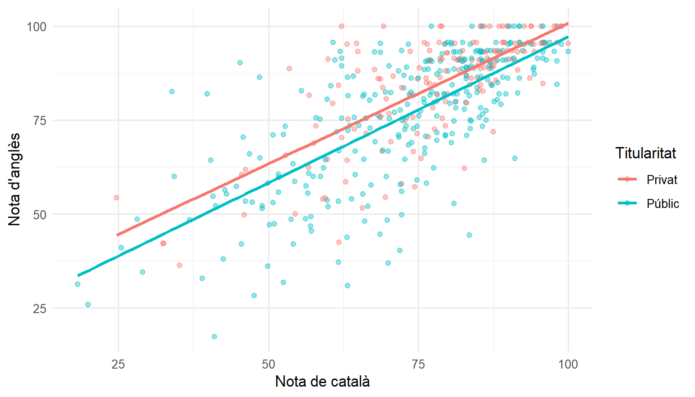
5. Un gràfic per grup: facet_wrap()
Quan hi ha molts grups, els colors es barregen. Millor fer un gràfic petit per a cada grup amb facet_wrap():
ggplot(competencies, aes(x = nota_cat, y = nota_ang)) +
geom_point(alpha = 0.4, color = "grey50") +
geom_smooth(method = "lm", se = FALSE, color = "#6D071A") +
facet_wrap(~ habitat) + # un gràfic per hàbitat
labs(x = "Nota de català", y = "Nota d'anglès") +
theme_minimal()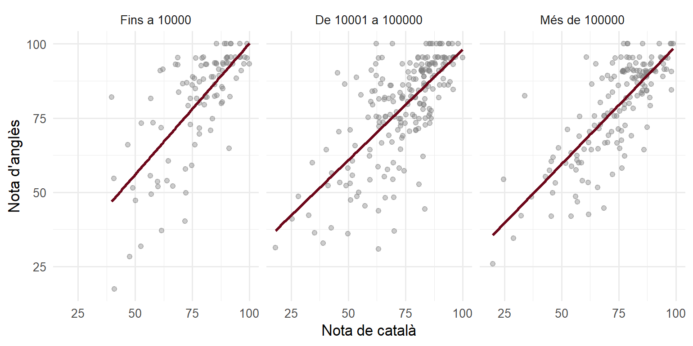
Nota✍️ Prova-ho: un gràfic per nivell de matemàtiques (cliqueu per veure la solució)
Feu un gràfic de dispersió de català i anglès amb un gràfic per a cada nivell de matemàtiques (nivell_mat).
ggplot(competencies, aes(x = nota_cat, y = nota_ang)) +
geom_point(alpha = 0.4, color = "steelblue") +
geom_smooth(method = "lm", se = FALSE, color = "black") +
facet_wrap(~ nivell_mat) +
labs(x = "Nota de català", y = "Nota d'anglès") +
theme_minimal()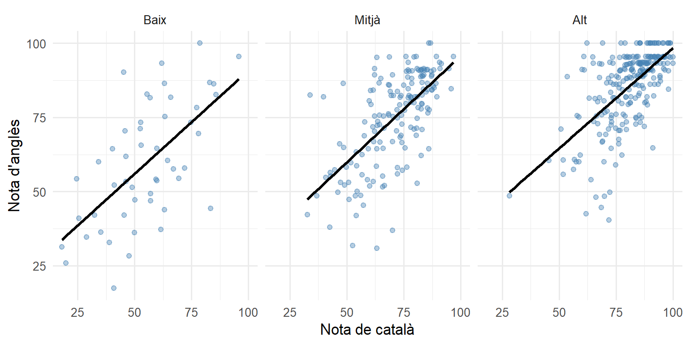
6. Escriure-hi la correlació
Amb annotate() podem escriure un text en un punt concret del gràfic. Per exemple, la correlació, calculada abans i guardada en un objecte:
r <- competencies |> # calculem la correlació...
filter(!is.na(nota_cat), !is.na(nota_ang)) |>
summarise(r = cor(nota_cat, nota_ang)) |>
pull(r) # ...i en traiem el número
ggplot(competencies, aes(x = nota_cat, y = nota_ang)) +
geom_point(alpha = 0.4, color = "grey50") +
geom_smooth(method = "lm", se = FALSE, color = "#6D071A") +
annotate("text", # un text...
x = 25, y = 95, # ...en aquesta posició...
label = paste0("r = ", round(r, 2)), # ...que diu això
size = 5, hjust = 0) +
labs(x = "Nota de català", y = "Nota d'anglès") +
theme_minimal()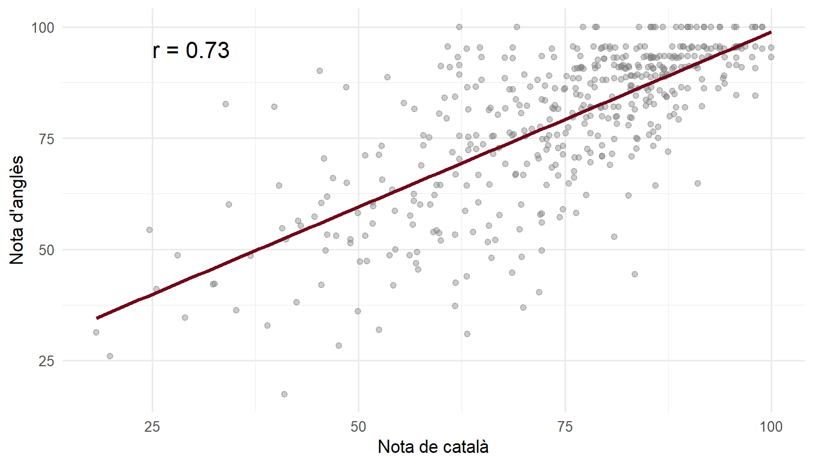
pull() treu una columna d’una taula com a número (o vector), per poder-la fer servir fora de la taula.
7. El model al gràfic: prediccions i residus
geom_smooth() dibuixa la recta, però no ens diu res de cada alumne. Si volem veure la predicció i el residu de cada punt (com a les slides), primer els calculem amb el model i després els dibuixem.
Primer, ens quedem amb els alumnes que tenen les dues notes, ajustem el model i hi afegim dues columnes: la nota predita i el residu.
notes <- competencies |>
filter(!is.na(nota_cat), !is.na(nota_ang)) # només els alumnes amb les dues notes
model <- lm(nota_ang ~ nota_cat, data = notes) # el model
notes <- notes |>
mutate(predita = predict(model), # la nota d'anglès que prediu la recta
residu = nota_ang - predita) # real menys predita
notes |>
select(nota_cat, nota_ang, predita, residu) |>
head(5)# A tibble: 5 × 4
nota_cat nota_ang predita residu
<dbl> <dbl> <dbl> <dbl>
1 86.8 88.7 88.5 0.172
2 33.9 82.6 46.9 35.7
3 78.5 95.6 82.0 13.6
4 74.8 59 79.1 -20.1
5 89.9 100 90.9 9.06 Ara dibuixem la recta a partir dels coeficients del model amb geom_abline(), i el residu de cada alumne com un segment vertical amb geom_segment(). Per no omplir el gràfic, ho fem només amb 40 alumnes a l’atzar:
set.seed(4) # perquè surtin sempre els mateixos 40
mostra <- notes |>
slice_sample(n = 40) # 40 alumnes a l'atzar
ggplot(mostra, aes(x = nota_cat, y = nota_ang)) +
geom_abline(intercept = coef(model)[1], # la recta del model:
slope = coef(model)[2], # intercept i pendent
color = "#6D071A", linewidth = 1.2) +
geom_segment(aes(xend = nota_cat, yend = predita), # de cada punt fins a la recta:
linetype = "dashed", color = "grey50") + # el residu
geom_point(size = 2) +
labs(x = "Nota de català", y = "Nota d'anglès",
caption = "Línies discontínues: el residu de cada alumne") +
theme_minimal()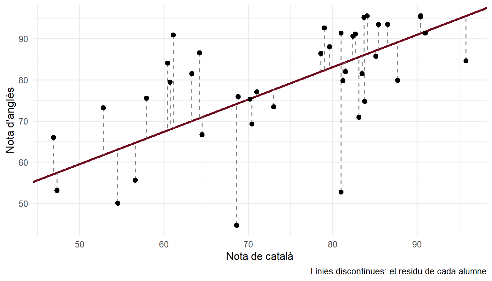
I quin alumne s’allunya més del que prediu el model? El de residu més negatiu (arrange() ordena de menys a més):
extrem <- notes |>
arrange(residu) |> # de menys a més residu
head(1) # el primer: el més negatiu
extrem |>
select(nota_cat, nota_ang, predita, residu)# A tibble: 1 × 4
nota_cat nota_ang predita residu
<dbl> <dbl> <dbl> <dbl>
1 83.5 44.3 85.9 -41.6ggplot(notes, aes(x = nota_cat, y = nota_ang)) +
geom_point(alpha = 0.3, color = "grey50") +
geom_smooth(method = "lm", se = FALSE, color = "#6D071A") +
geom_point(data = extrem, size = 4, color = "#6D071A") + # l'alumne, destacat
annotate("text", x = extrem$nota_cat - 2, y = extrem$nota_ang, hjust = 1,
label = "Molta més nota de català que d'anglès") +
labs(x = "Nota de català", y = "Nota d'anglès") +
theme_minimal()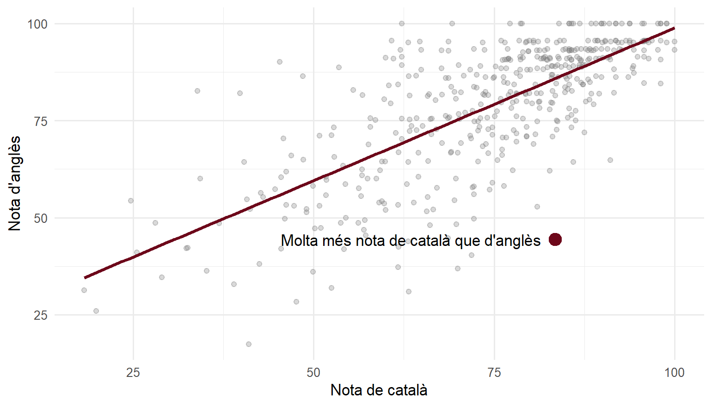
Consell
Fixeu-vos que, en el segon gràfic, el punt destacat fa servir unes altres dades (data = extrem): cada capa d’un gràfic pot tenir les seves.
Nota✍️ Prova-ho: el gràfic de residus (cliqueu per veure la solució)
Per comprovar els supòsits del model (vegeu l’explicació dels supòsits), es fa un gràfic amb la nota predita a l’eix X i el residu a l’eix Y, i una línia horitzontal al 0 (geom_hline(yintercept = 0)). Feu-lo amb la taula notes. Els punts fan un núvol sense forma, o hi veieu una corba o un embut?
ggplot(notes, aes(x = predita, y = residu)) +
geom_point(alpha = 0.4, color = "steelblue") +
geom_hline(yintercept = 0, linetype = "dashed") + # la línia del 0
labs(x = "Nota d'anglès predita", y = "Residu") +
theme_minimal()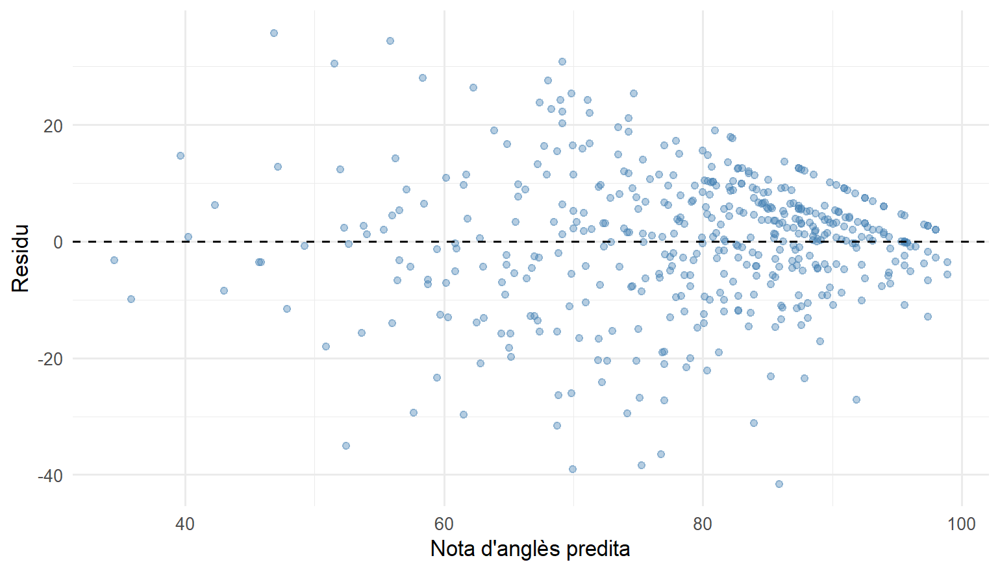
Un núvol més o menys sense forma, centrat al 0, amb uns quants residus molt negatius: alumnes que treuen molta menys nota d’anglès de la que tocaria per la seva nota de català.
8. Desar el gràfic
Com a la sessió 2, ggsave() desa l’últim gràfic que heu fet:
ggsave("dispersio_cat_ang.png", width = 8, height = 5)Xuleta
| Vull… | Codi |
|---|---|
| Diagrama de dispersió | ggplot(dades, aes(x = X, y = Y)) + geom_point() |
| Punts transparents | geom_point(alpha = 0.4) |
| Recta de regressió | + geom_smooth(method = "lm") |
| … sense la franja | geom_smooth(method = "lm", se = FALSE) |
| Color i recta per grup | aes(x = X, y = Y, color = grup) |
| Colors a mà | + scale_color_manual(values = c("A" = "red", "B" = "blue")) |
| Un gràfic per grup | + facet_wrap(~ grup) |
| Escriure un text | + annotate("text", x = ..., y = ..., label = "...") |
| Predicció i residu de cada cas | mutate(predita = predict(model), residu = Y - predita) |
| La recta a partir del model | + geom_abline(intercept = coef(model)[1], slope = coef(model)[2]) |
| Els residus com a segments | + geom_segment(aes(xend = X, yend = predita)) |
| Una capa amb altres dades | + geom_point(data = altres_dades) |
| Títols | + labs(x = "...", y = "...", title = "...") |
| Desar | ggsave("fitxer.png", width = 8, height = 5) |
Per anar més lluny
- Tutorial de primers gràfics (sessió 2) i de gràfics bivariats (sessió 3).
- R for Data Science, capítol «Data visualization» (en anglès).
- Xuleta oficial de
ggplot2(PDF, en anglès).